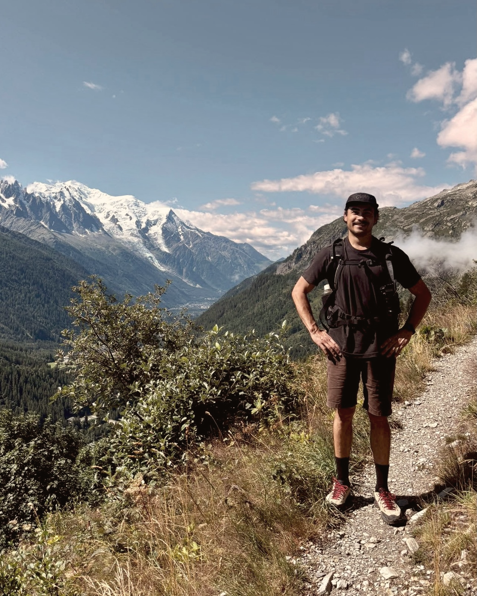

About
Hello

I have over 10 years experience shaping products through design, front-end, and strategic product thinking.
I spent five years at Multiverse, where I grew from product designer to lead. I designed Atlas, an AI coach that's answered 1.5M questions to date. Before that I worked on mobile apps, a workspace platform, and e-learning web apps.
Today I'm a lead product designer at Unobravo, working closely with therapists to figure out how AI can make mental healthcare easier to access.
I love building products that make people more capable and happier. Away from the screen I'm usually in the sea, hiking up a mountain, climbing, or getting lost in a museum.
Experience
Dec 2025 — Present
Lead product designer, AI products · Unobravo
Working closely with therapists to design new AI products that support Unobravo's mission to improve access to mental-health care. I also support and mentor designers in using AI effectively throughout the product design process.
2020 — 2025
Lead → Senior → product designer · Multiverse
Led product design strategy across a core pillar — supporting learners, coaches, and learning designers. I designed and built Atlas, our 0→1 AI Guide, now used by thousands of learners. As the team's accessibility champion, I led accessibility across product and achieved WCAG AA compliance.
2019 — 2020
Founding product designer · FastTask
Led design for HeyBryan’s expert and consumer apps, focusing on growth, trust, and delivery speed. I launched the design system, ran rapid experiments, and shipped improvements that moved key metrics.
2017 — 2018
Product designer · TrustedHousesitters
Worked across web and mobile to improve key journeys and drive growth — redesigned the platform, built the design system, and ran sprints on sign-up and onboarding. (App of the Day in the UK App Store.)
2014 — 2017
Product designer · Claromentis
A digital workplace platform for file sharing, communication, and collaboration. Led product design and front-end development, launching the customisable intranet platform.
2012 — 2013
Student developer · Kineo
A workplace learning company specialising in digital training content. I built HTML templates to bring visual designs to life, delivered assets for interactive e-learning modules, and supported the design team with graphics and mockups.
Education
2010 — 2014
BSc, Digital Media · University of Brighton
Focused on human–computer interaction and mobile application design.
Issued Aug 2020
Digital product Management · FutureLearn
A certification in modern digital product management practice.
See certificationA few records on heavy rotation
And some books that have stuck with me